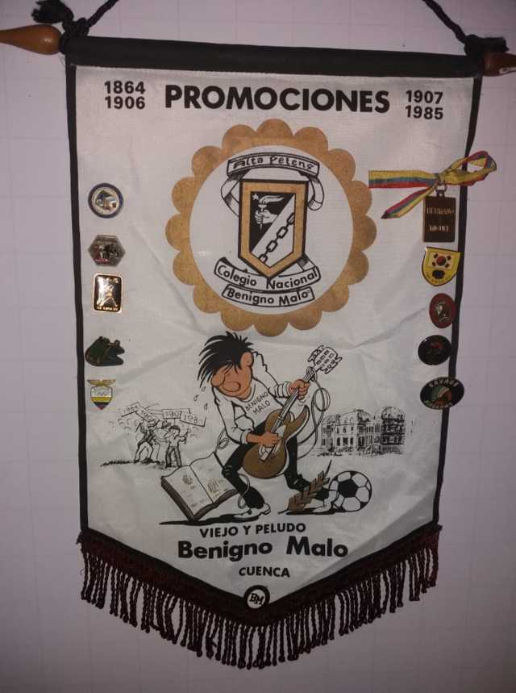
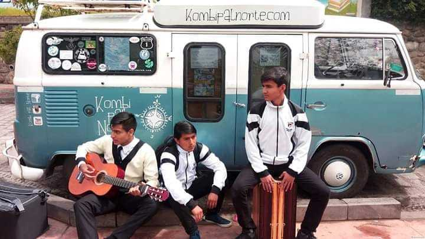
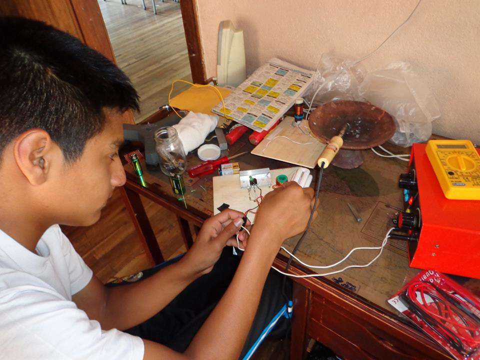
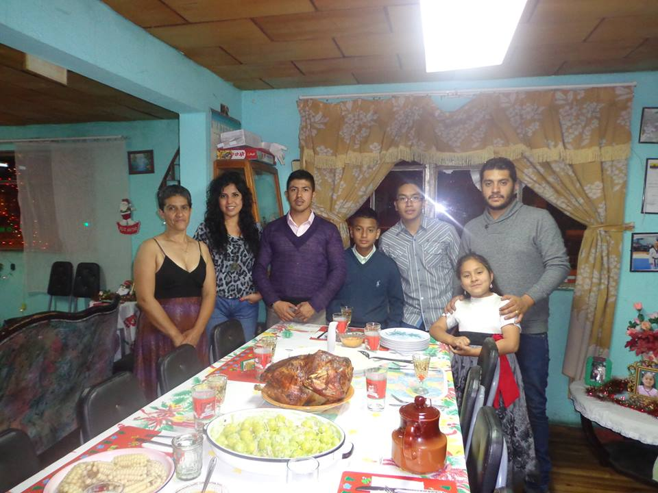

Mis Proyecciones
El Reencuentro
Más que una ambición esto es un deseo que probablemente se cumpla, pues en el 2019 el Benigno Malo cumple 155 años de vida institucional y el 9 de marzo de ese año habrá el reencuentro de generaciones. Estoy impaciente porque llegue ese día debido a que para mí esa etapa fue mi preferida. Me intriga la edad de poder juntarme con todos mis compañeros una vez más y saber que ha sido de sus vidas en estos meses. Obviamente aun no ha pasado tanto tiempo, pero realmente deseo que cada cinco años me pueda volver a ver con mis compañeros en el reencuentro de generaciones.

Chevaux
Uno de mis anhelos más grandes es poder formar una banda de rock con mis amigos, ya que la música es lo más especial que hay sobre el universo y me encantaría poder componer canciones para compartir mi forma de ver el mundo con todas las personas. El simple hecho de poder formarla con amigos haría que este sueño sea aún mejor, es algo que realmente deseo cumplir. Esta sección se llama Chevaux en honor a mi primera banda, esta la forme cuando estaba en el colegio y sin duda a sido una de las experiencias mas preciadas que tengo. Me encanta recordar esas tardes en las que teníamos ensayos, ¡Que buenos tiempos!

La Profesión
Si me preguntaran cuál es mi objetivo fundamental en la vida sin dudarlo este estaría entre los dos primeros, pues el conseguir ser un ingeniero en telecomunicaciones de la facultad de Ingeniería, de la Universidad Estatal de Cuenca sería para mí un gran honor. Simplemente porque esta universidad es una de las mejores del país y para mí es causa de orgullo el simple hecho de pertenecer a esta institución. Sin embargo, mis objetivos profesionales no se quedan ahí ya que me complacería poder crear una empresa internacional de telecomunicaciones y que de cierta forma llegue a ser de las más reconocidas a nivel del mundo. Me fascinaría poder dejar un legado a la sociedad y más que todo ser un motivo de orgullo para mi familia y todo el país.

Una Familia
Una familia, si, este es el deseo más grande que tengo actualmente, poder formar una familia. La verdad no entiendo por que las personas hoy en día odian la idea de poder tener hijos, francamente a mi me parece algo absurdo. Por supuesto sé que tener una familia debe constar de sus grandes responsabilidades y lo mejor es que estoy consciente de eso y aun así la idea me parece estupenda. Obviamente primero debo conseguir superarme profesionalmente para que esta familia que tanto anhelo no sufra de adversidades económicas. Seguramente la vida más adelante es muy dura y lo único que espero es poder disfrutar de los momentos felices que esta me regale.
